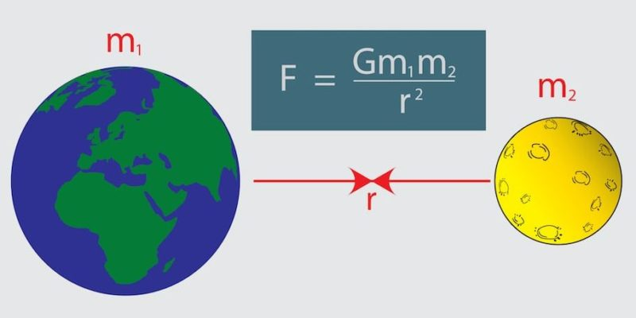

Movimiento Gravitatorio
Fuerza Gravitacional
La gravedad es una de las cuatro fuerzas o interacciones fundamentales observadas hasta el momento en la naturaleza.
La gravedad es la responsable de la caída de los cuerpos en la Tierra y de los movimientos a gran escala que se observan en el Universo: que la Luna orbite alrededor de la Tierra, que los planetas orbiten alrededor del Sol y que las galaxias estén rotando en torno a un centro.
Todas las partículas materiales y todos los cuerpos se atraen mutuamente por el simple hecho de tener masa, en proporción directa a sus masas. La gravedad tiene un alcance teórico infinito; pero, la fuerza es mayor si los objetos están próximos, y mientras se van alejando dicha fuerza pierde intensidad en proporción al cuadrado de la distancia que separa a los cuerpos. Por ejemplo, si se aleja un objeto de otro al triple de distancia, entonces la fuerza de gravedad se reduce a la novena parte.
La fuerza de gravedad siempre es atractiva, nunca es repulsiva y tiene alcance infinito. Por muy alejados que estén entre sí dos cuerpos, siguen experimentando esta fuerza, aunque más débil a medida que aumenta la distancia.
La fuerza de gravedad siempre produce atracción entre los cuerpos, cualquiera que sea su composición. La fuerza resultante se produce atrayéndose el centro de gravedad de un objeto con el centro de gravedad del otro.
La fuerza gravitatoria es universal y todas las partículas materiales están sometidas a ella, sin excepción.
